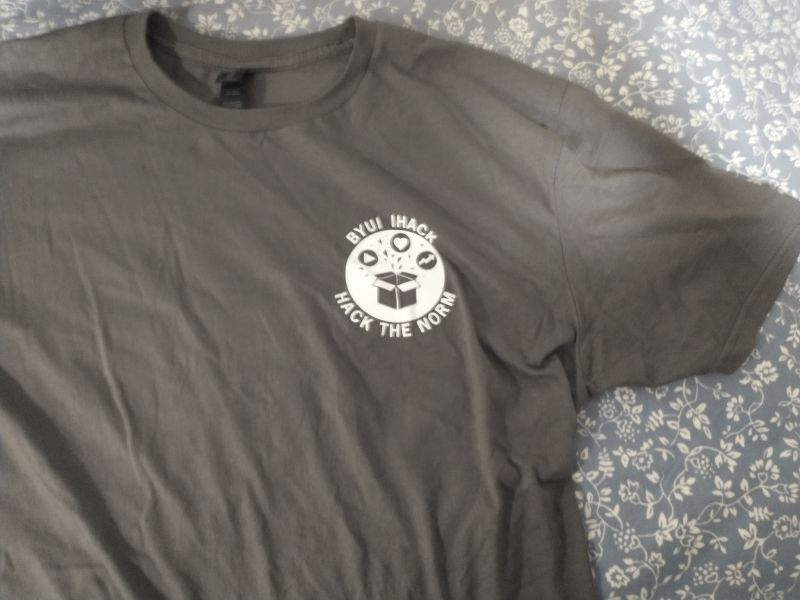

In this role, I worked behind the scenes to keep the hackathon running smoothly from start to finish. I managed communication between team members, helped organize logistics for over 150 participants, and ensured everything stayed on track during the event. I also evaluated projects as a judge, giving feedback on innovative student ideas. One of my biggest contributions was turning planning discussions into clear action steps, which helped our team stay organized and execute the event successfully.
